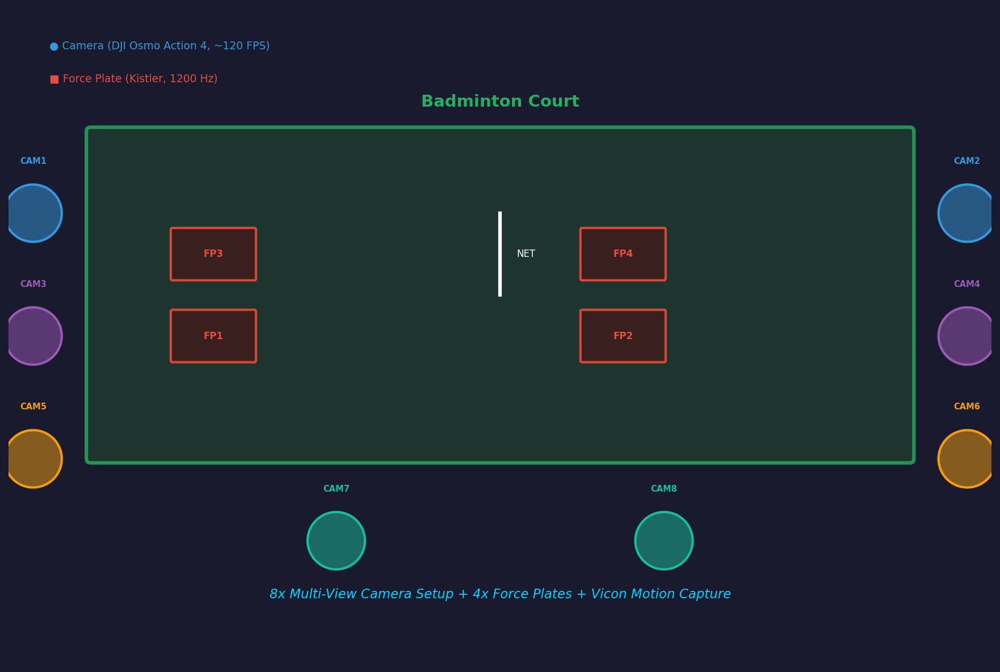
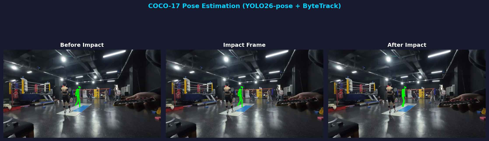
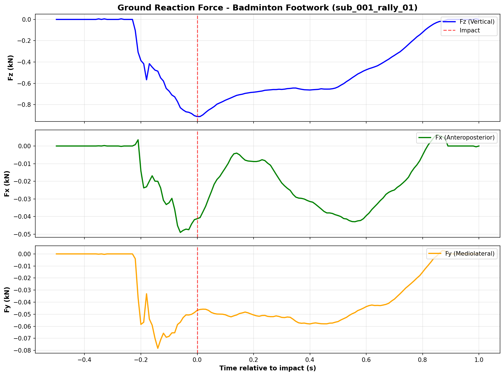
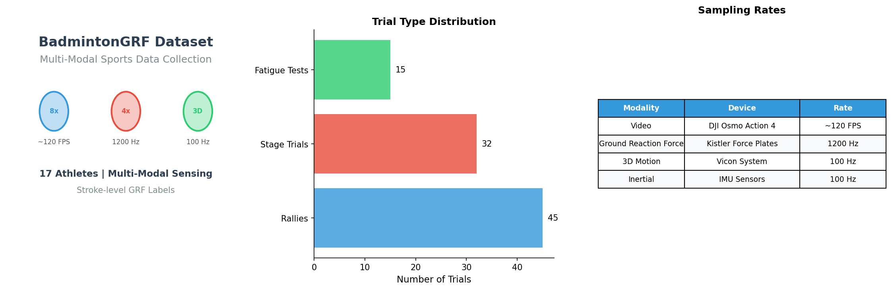
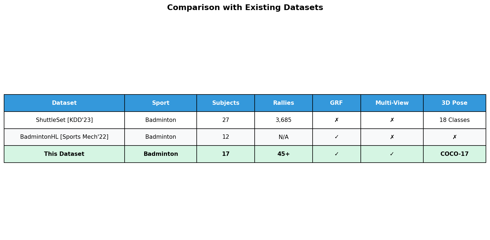

A Multi-Modal Dataset for Video-based Ground Reaction Force Estimation in Badminton
BadmintonGRF is a comprehensive multi-modal dataset collected to advance research in sports biomechanics and video-based motion analysis. It provides synchronized measurements from multiple sensing modalities during badminton footwork.
Unlike existing datasets, BadmintonGRF includes precise ground reaction force (GRF) measurements synchronized with multi-view video, 3D motion capture, and inertial sensor data.
Our data collection platform integrates consumer-grade action cameras with professional-grade biomechanics measurement equipment.

Synchronized video from 8 camera views capturing the full badminton court from different angles.
COCO-17 keypoint annotations using YOLO26-pose with ByteTrack multi-object tracking.
Precise GRF measurements from Kistler force plates during foot-ground contact events.

Player pose detected using YOLO26-pose with ByteTrack. Three frames show before, during, and after foot-ground impact.

Three-axis GRF measured during badminton footwork. Fz shows characteristic impact peaks during foot strikes.

Comprehensive statistics of the BadmintonGRF dataset including trial types, sampling rates, and equipment used.

BadmintonGRF is unique in providing synchronized multi-view video, GRF ground truth, and 3D pose annotations.
| Dataset | Sport | Subjects | Rallies/Trials | GRF | Multi-View | 3D Pose |
|---|---|---|---|---|---|---|
| ShuttleSet (KDD'23) | Badminton | 27 | 3,685 rallies | ✗ | ✗ | 18 classes |
| BadmintonHL (Sports Mech'22) | Badminton | 12 | N/A | ✓ | ✗ | ✗ |
| Ours (BadmintonGRF) | Badminton | 17 | 156 trials | ✓ | ✓ | COCO-17 |
data/ ├── sub_001/ │ ├── video/ │ │ ├── cam1/ # 8 camera views │ │ ├── cam2/ │ │ └── ... │ ├── pose/ # COCO-17 pose annotations │ │ ├── sub_001_trial_cam2_pose.npz │ │ └── ... │ ├── labels/ # GRF ground truth │ │ ├── sub_001_trial_grf.npy │ │ └── ... │ ├── mocap/ # Vicon 3D motion capture │ │ └── ... │ └── imu/ # IMU sensor data │ └── ... └── ... (more subjects)